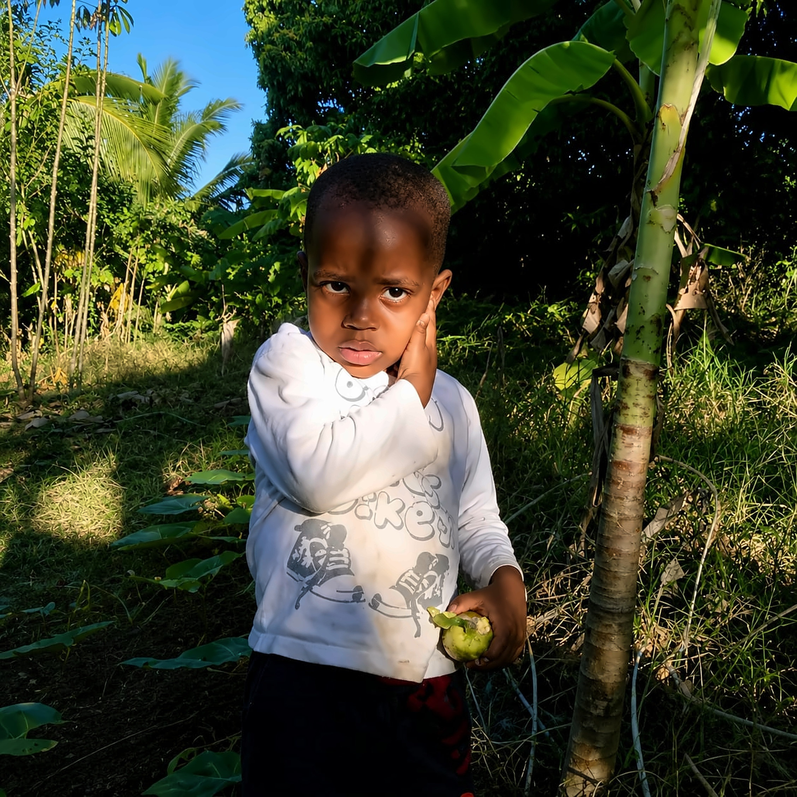

MoheliGoTRAVERSÉES MARITIMES
MOHÉLI · COMORES
ON NE VISITE PAS MOHÉLI.ON Y REVIENT.
La lumière de six heures, les bananiers derrière la maison,
une goyave cueillie en rentrant. Rien de tout ça n'est mis en scène.
TRAVERSÉES MARITIMES DES COMORES
moheligo.com